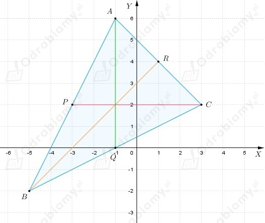

| Przypomnijmy, że środkową trójkąta nazywamy odcinek łączący jego wierzchołek ze środkiem przeciwległego boku. |
Z treści zadania wiemy, że punkty
są środkami boków trójkąta ABC.
Przyjmijmy oznaczenia
P - środek odcinka AB
Q - środek odcinka BC
R- środek odcinka AC
Zatem z definicji środka odcinka dostajemy
Z pierwszego równania dostajemy
Z trzeciego równania dostajemy
Podstawiając powyższe do drugiego równania otrzymujemy
zatem
Korzystając kolejny raz z definicji środka odcinka dostajemy
Z pierwszego równania dostajemy
Z trzeciego równania dostajemy
Podstawiając powyższe do drugiego równania otrzymujemy
zatem
Możemy zapisać współrzędne wierzchołków trójkąta ABC
Wyznaczmy równania prostych zawierających środkowe (czyli równanie prostej AQ, BR, CP)
Spójrzmy na rysunek

Podstawiając do pierwszego równania wartość b z drugiego równania otrzymujemy
zatem
Dostajemy
| Przypomnijmy, że symetralną odcinka AB jest prosta do niego prostopadła i przechodząca przez jego środek. Inaczej mówiąc jest ona zbiorem punktów, których odległości od punktów A i B są równe. |
a)
Z treści zadania wiemy, że
Obliczmy współczynnik kierunkowy prostej y=ax+b, w której zawarty jest odcinek AB
Symetralna odcinka AB jest do niego prostopadła, zatem jej współczynnik kierunkowy jest równy 5/4.
Wyznaczmy środek odcinka AB
Teraz podstawmy współrzędne punktu S do równania prostej postaci y=5/4x+b
Zatem symetralna odcinka AB opisana jest równaniem
b)
Z treści zadania wiemy, że
Obliczmy współczynnik kierunkowy prostej y=ax+b, w której zawarty jest odcinek AB
Symetralna odcinka AB jest do niego prostopadła, zatem jej współczynnik kierunkowy jest równy 2.
Wyznaczmy środek odcinka AB
Teraz podstawmy współrzędne punktu S do równania prostej postaci y=2x+b
Zatem symetralna odcinka AB opisana jest równaniem
c)
Z treści zadania wiemy, że
Obliczmy współczynnik kierunkowy prostej y=ax+b, w której zawarty jest odcinek AB
Symetralna odcinka AB jest do niego prostopadła, zatem jej współczynnik kierunkowy jest równy (-3).
Wyznaczmy środek odcinka AB
Teraz podstawmy współrzędne punktu S do równania prostej postaci y=-3x+b
Zatem symetralna odcinka AB opisana jest równaniem